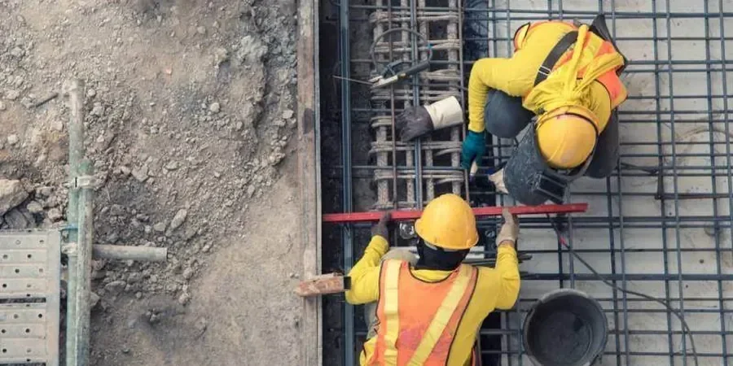

Our Bradford office provides comprehensive geotechnical services tailored to the region's unique ground conditions. From site characterization and subsurface investigation to foundation design, slope stability analysis, and construction monitoring, we deliver code-compliant solutions for residential, commercial, and infrastructure projects. We combine consolidated regional experience with calibrated field and laboratory equipment to assess soil behavior, groundwater regimes, and bearing capacity. Whether for shallow foundations, deep excavations, or pavement subgrades, our team ensures solid, cost-effective designs that align with local regulatory frameworks. Explore our expertise in pavement subgrade design and retaining wall design to see how we support Bradford's built environment.

Method and coverage
Regional considerations
Our team brings consolidated regional experience across the Yorkshire and Humber region, having delivered numerous projects in Bradford's varied geology—from brownfield redevelopments in the city centre to infrastructure schemes in the Aire Valley. We operate a UKAS-accredited laboratory for index and strength testing, ensuring traceable results. Our engineers are proficient in local planning authority requirements and coordinate closely with contractors and regulatory bodies to streamline approvals. This local insight, combined with rigorous adherence to Eurocode 7 and BS standards, guarantees dependable, cost-effective solutions for every project.
Process video
Standards that apply
Our geotechnical work in Bradford follows UK standards, primarily Eurocode 7 (BS EN 1997-1 and BS EN 1997-2) for geotechnical design, supported by BS 5930 for site investigation and BS 8004 for foundations. Ground investigation methods adhere to BS EN ISO 22475 (sampling) and BS EN ISO 17892 (laboratory testing). For seismic considerations, we reference the UK National Annex to BS EN 1998-5. All field testing—including SPT (BS EN ISO 22476-3) and plate load tests—is performed using calibrated equipment to ensure reliable data for code-compliant reports.
Top questions
What are the typical ground conditions for foundation design in Bradford?
Bradford's ground conditions vary widely, from stiff glacial tills on higher ground to soft alluvial clays and silts in the Aire Valley. Bedrock of Millstone Grit or Coal Measures is often found at depth. Foundations must account for variable soil strength, high plasticity in clays, and potential shallow groundwater. A thorough site investigation, including boreholes and laboratory testing, is essential to determine bearing capacity and settlement characteristics.
Are there any historical mining hazards in Bradford that affect geotechnical work?
Yes, parts of Bradford are underlain by shallow coal mine workings from the 19th and early 20th centuries, particularly in areas underlain by the Coal Measures. These can cause subsidence or void collapse risks. A desk study reviewing mining records and coal authority data is a critical first step. Where risks are identified, intrusive investigation (e.g., probe drilling or geophysics) and remedial grouting may be required before construction.
What UK standards govern geotechnical site investigations in Bradford?
Site investigations in Bradford must comply with BS 5930 (Code of practice for ground investigations) and BS EN 1997-2 (Eurocode 7 – Ground investigation and testing). Sampling and testing follow BS EN ISO 22475 and BS EN ISO 17892 series. For foundation design, Eurocode 7 (BS EN 1997-1) applies, with the UK National Annex providing country-specific parameters. Local building control may also reference the NHBC Standards for residential projects.
How do you handle groundwater in Bradford's valley areas for basement or deep excavation projects?
In the Aire Valley, groundwater can be shallow (1–3 m depth) and influenced by river levels. For deep excavations, we recommend pumping tests and standpipe piezometers to assess permeability and drawdown. Temporary dewatering systems (e.g., sump pumping or wellpoints) are often needed, with discharge consent from the Environment Agency. For permanent works, we design drainage blankets, waterproofing, or cut-off walls to manage seepage and prevent hydrostatic uplift.